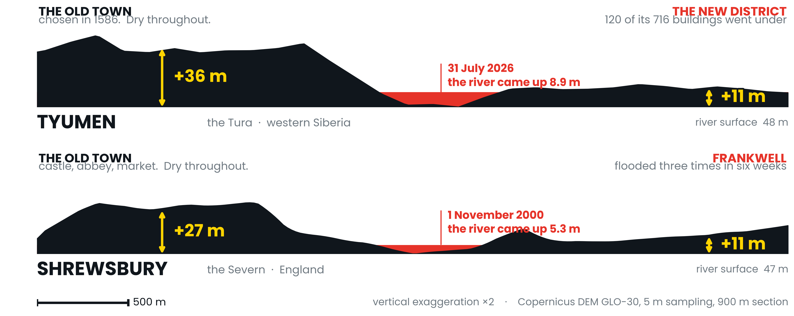

The ground
remembers
Every old river town in Britain stands where it does because somebody once read the ground and worked out where the water goes. We have spent a century building on the parts they left alone. In July 2026 a Siberian city found out what that costs — so I measured it, and cut the same section through Shropshire.

29 July 2026
Two towns, 4,205 km apart, cut to the same scale


The Tura tripled. A record 8.9 m rise put 281 hectares of dry land under water — 40 km of road on the low bank against 11 km on the high — and almost all of the damage fell on the side the founders had left empty.
The old rule held for 440 years. Then it didn't.
The 2026 peak climbed onto the second terrace — ground raised above the floodplain, built on in the belief that it stood clear — and it went under for the first time in living memory. Four centuries of siting logic is not a boundary but a threshold, and a record flood is what finds it.
So what does this mean here?
Shrewsbury's gauge board at the Welsh Bridge starts at 47.0 m above sea level; the highest water ever recorded there, in 1795, stood 5.70 m up it. The medieval town, 27 m up, has never been the problem. Frankwell, eleven metres up, flooded three times in six weeks in 2000.
Free satellite imagery, a free 30 m elevation model, a few hundred lines of Python. Any town in Britain can be sectioned this way in an afternoon. The question is not whether a river floods, but how far above the water we are building now.
Method. Sentinel-2 L2A (10 m), 18 June and 29 July 2026. MNDWI (Xu, 2006) constrained by elevation and by connectivity to the channel. Terrain: Copernicus DEM GLO-30, 5 m sampling.
Limits. GLO-30 is a surface model — rooftops, not bare earth — so no flood depth is modelled for Shrewsbury. The Tyumen figures are a lower bound: the image precedes the peak.
Sasha Ostriagin, Bromsgrove School. I filled sandbags on the north bank for two days as the water came up. Code, data and QGIS project are public.